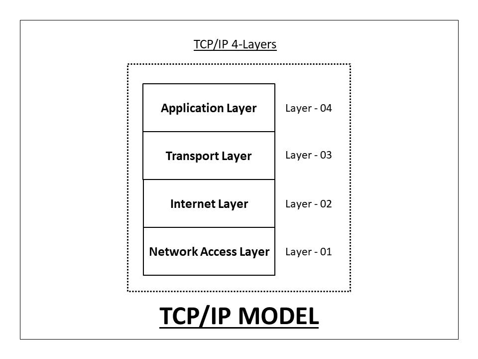

What is TCP/IP?
A set of protocols—that govern how data is sent and received across the internet. TCP/IP is the foundation of all internet communication.
The Components
- TCP (Transmission Control Protocol)
- Breaks data into packets and ensures they all arrive correctly in order.
- IP (Internet Protocol)
- Handles the addressing and routing of those packets to the right destination.
How It Works
- Data is split into packets.
- Each packet is labelled with a source and destination IP address.
- Packets travel independently and may take different routes.
- TCP reassembles them in the correct order at the destination.
- If any packet is lost, TCP requests it to be sent again.
The Four Layers of TCP/IP
- 1. Application Layer: What the user interacts with, including protocols like HTTP for web browsing and SMTP for email.
- 2. Transport Layer: Where TCP operates to manage the reliable, ordered delivery of data packets.
- 3. Internet Layer: Where IP handles the logical addressing and routing of packets to their destination.
- 4. Network Access Layer: The physical transmission of data bits over hardware like fiber cables or Wi-Fi.